沒有一個選擇是只做一件事的。
No decision was made to do only one thing.
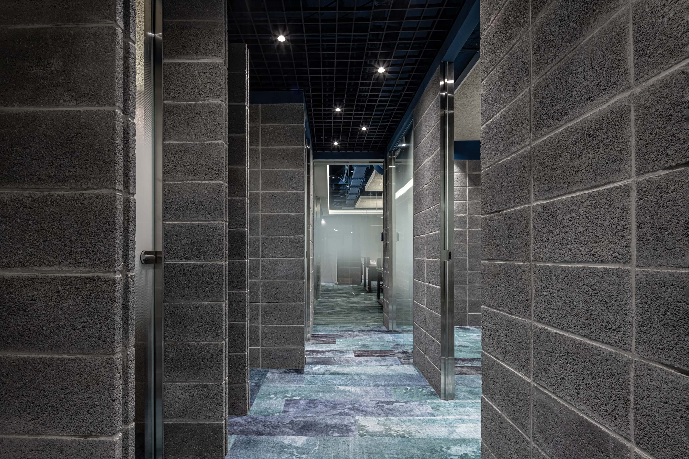
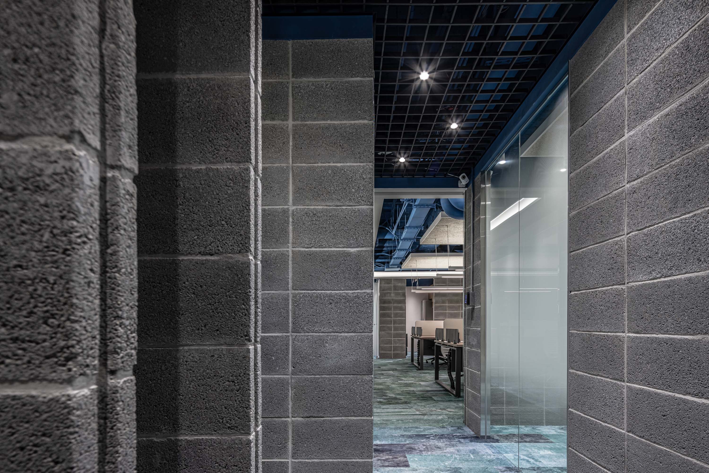
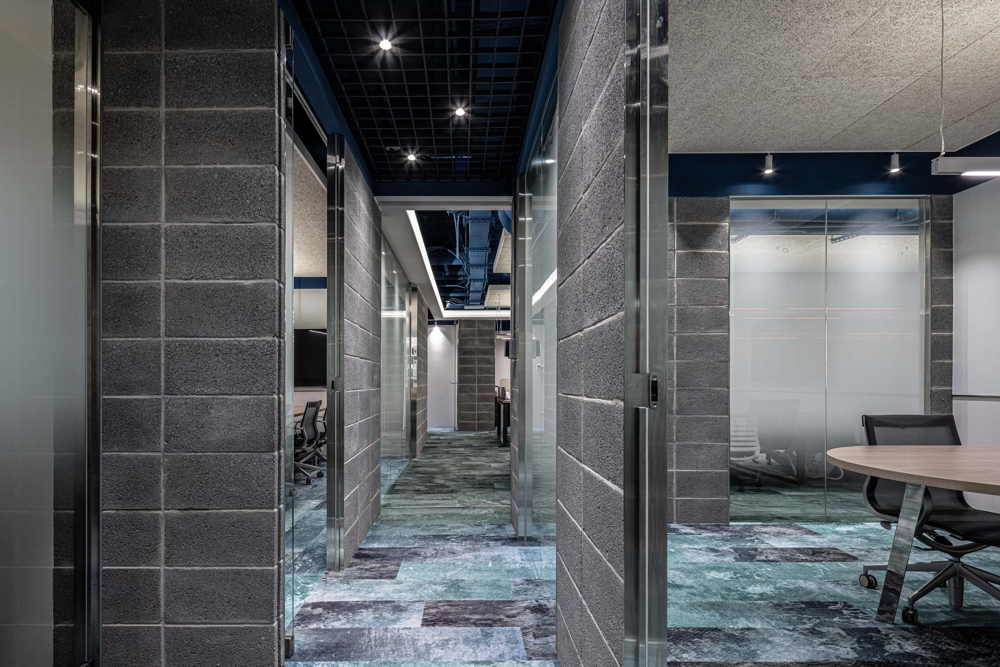
01
走進來，百歲磚沒有上漆。從入口到隔間牆，都是它。磚的顏色是磚本來的顏色。
Walk in and the century-old brick is unpainted. From the entrance to the partition walls — its color is its own.
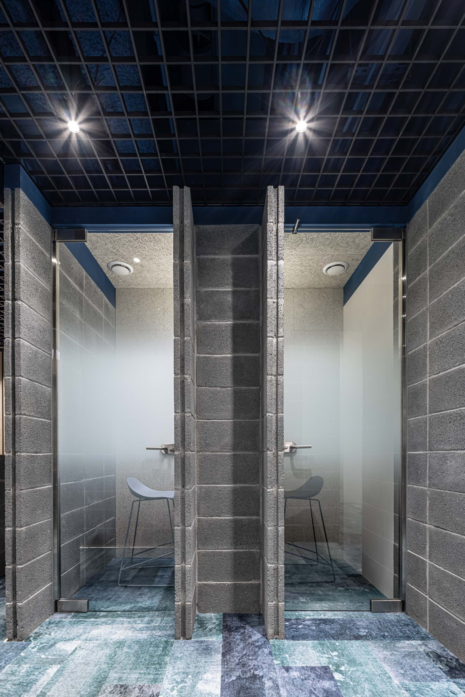
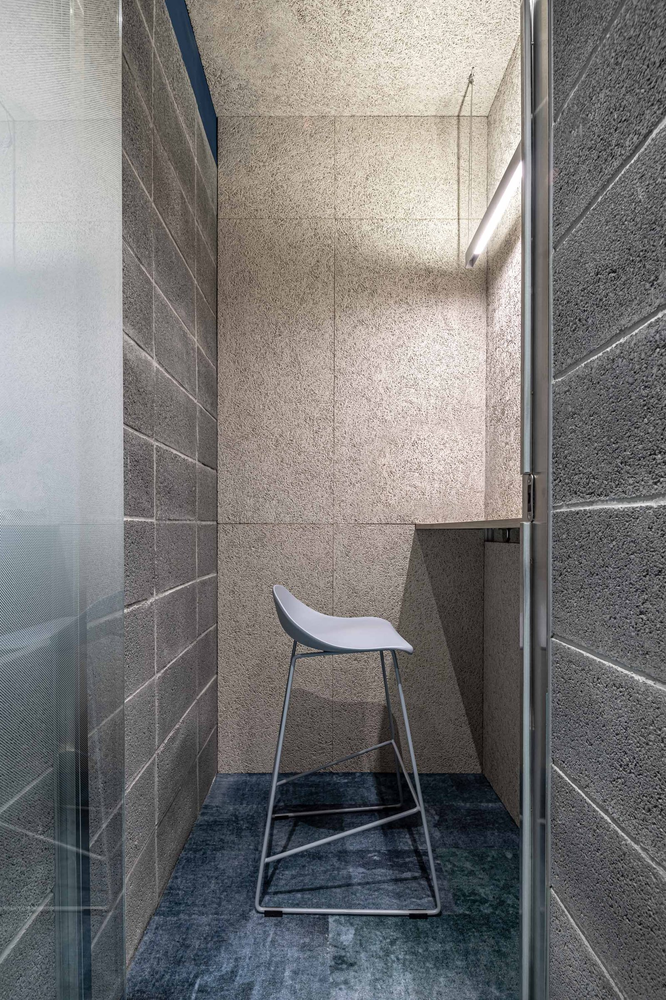
02
天花板沒有封板——舊管線太多，日後維修不能再拆一次天花，留著就讓它留著，管線噴上品牌藍，抬頭看見的是公司的顏色。
The ceiling stays open — too many old pipes to tear out again, so they stay, sprayed in the brand's blue. Look up and you see the company's color.
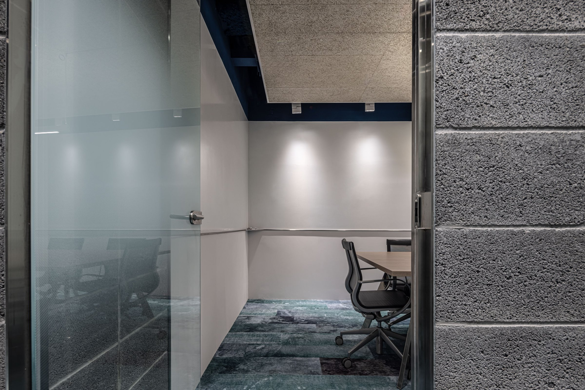
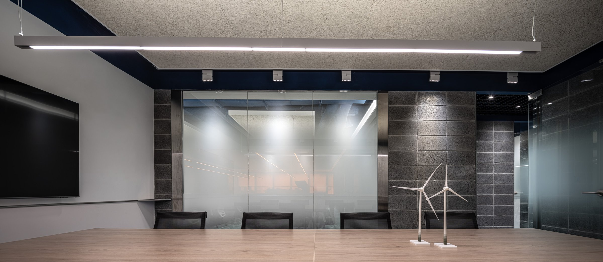
03
接待在外，電話亭和會議室在中間，辦公室在最裡面——對外的事在前面解決，工作的人不被打斷。
Reception at the front, phone booths and meeting rooms in the middle, workstations at the back — outward-facing business resolved before it reaches the people who need to focus.
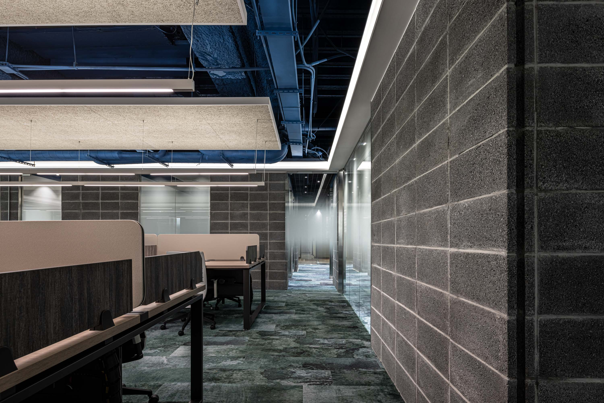
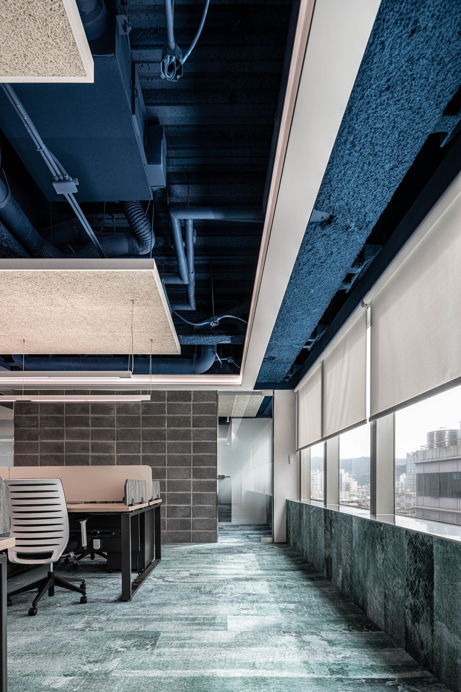
04
電話亭用鐵件與玻璃圍塑，不封頂。隔音靠材質的厚度，而不是密閉。這個決定讓電話亭在空間裡保持透明感，不會變成一個跟整體斷開的盒子。每個選擇都同時在回應兩件事：功能，和空間的整體感。
Phone booths are framed in steel and glass, open-topped. Sound isolation relies on material mass, not enclosure. This keeps the booths transparent within the space — they never become boxes disconnected from the whole. Every choice answers two things at once: function, and the coherence of the space.
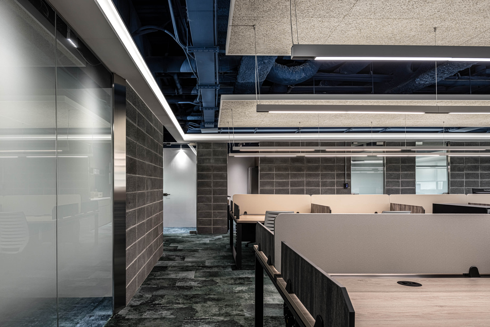
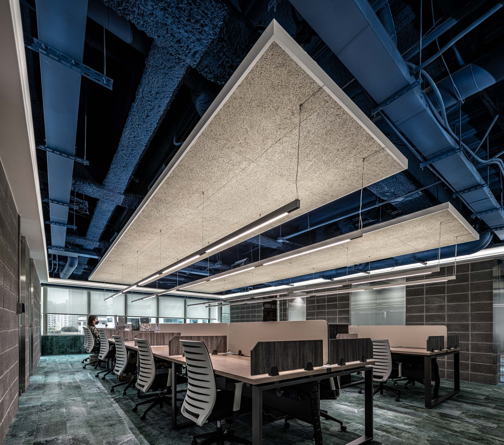
05
這個空間用了三種主要材料：百歲磚、品牌藍管線、黑色鐵件。三個選擇都不是風格的選擇——磚是建築本來的，藍是品牌本來的，鐵件是結構本來的。設計的工作不是加東西進來，是讓已經在那裡的東西被看見。
Three primary materials: century-old brick, brand-blue pipes, black steel. None are style choices — the brick belongs to the building, the blue to the brand, the steel to the structure. The design work is not adding things in, but making what is already there visible.
All Photos